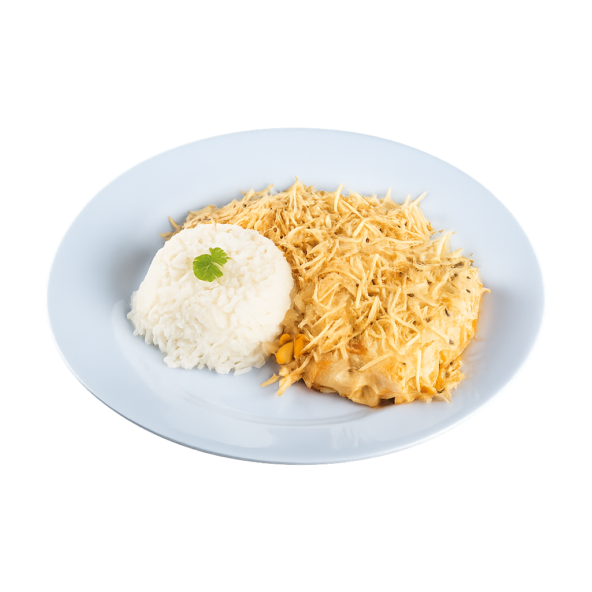
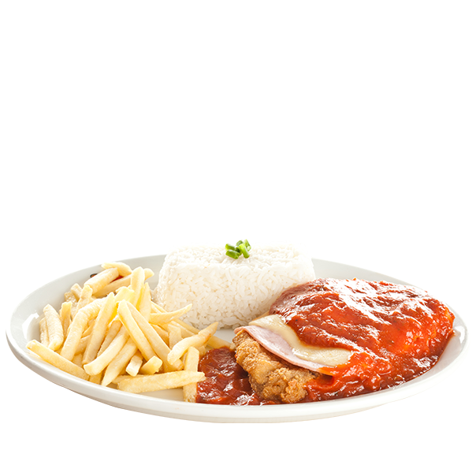

Cardápio
Opções de Pratos
Strogonoff
Strogonoff de frango com ingredientes simples e saborosos.
Ingredientes:
- 500g de peito de frango cortado em cubos (ou carne/cogumelos)
- 1 cebola média picada
- 2 dentes de alho picados
- 1 colher (sopa) de óleo ou manteiga
- 2 colheres (sopa) de ketchup
- 1 colher (sopa) de mostarda
- 1 caixa de creme de leite (200g)
- 1/2 xícara de molho de tomate ou 1 tomate picado (opcional)
- Sal e pimenta a gosto
- Champignon fatiado (opcional)
- Páprica ou noz-moscada (opcional)
Modo de Preparo:
- Em uma panela, aqueça o óleo ou manteiga e refogue a cebola até murchar.
- Adicione o alho e refogue mais um pouco.
- Coloque os cubos de frango e doure bem.
- Tempere com sal, pimenta, ketchup e mostarda.
- Se quiser, adicione o molho de tomate ou o tomate picado e cozinhe por 5 minutos.
- Abaixe o fogo e misture o creme de leite.
- Finalize com champignon ou temperos extras, se desejar.

Fricassê de Frango
Frango desfiado cremoso com milho, requeijão e batata palha crocante.
Ingredientes:
- 500g de peito de frango cozido e desfiado
- 1 lata de milho verde
- 1 copo de requeijão cremoso
- 1 caixinha de creme de leite
- 100g de queijo mussarela
- Sal e temperos a gosto
- Batata palha para cobrir
Modo de Preparo:
- Bata no liquidificador o milho, o requeijão e o creme de leite.
- Misture com o frango desfiado e tempere.
- Leve ao forno com queijo por cima e finalize com batata palha.
Frango Xadrez
Cubos de frango com pimentões, cebola e molho oriental agridoce.
Ingredientes:
- 500g de peito de frango em cubos
- 1 cebola grande em cubos
- 1 pimentão vermelho e 1 verde em cubos
- 2 colheres de sopa de molho shoyu
- 1 colher de chá de amido de milho
- Óleo, sal, alho e gengibre a gosto
Modo de Preparo:
- Doure o frango com alho e gengibre.
- Refogue os legumes rapidamente.
- Adicione o shoyu e o amido para engrossar.

Frango à Parmegiana
Filé de frango empanado com molho de tomate e queijo gratinado.
Ingredientes:
- 4 filés de peito de frango
- Sal, pimenta e alho para temperar
- Farinha de trigo, ovos e farinha de rosca
- Molho de tomate e queijo mussarela
Modo de Preparo:
- Tempere, empane e frite os filés.
- Cubra com molho e queijo e leve ao forno para gratinar.
Macarrão com Carne Moída
Ingredientes:
- 250g de macarrão (penne, parafuso ou espaguete)
- 300g de carne moída
- 1 cebola média picada
- 2 dentes de alho picados
- 2 colheres (sopa) de óleo ou azeite
- 1 caixa de molho de tomate (ou 3 tomates maduros picados)
- Sal, pimenta e cheiro-verde a gosto
Cozinhe o macarrão conforme as instruções da embalagem e reserve.
Em outra panela, aqueça o óleo e refogue a cebola e o alho até dourarem.
Adicione a carne moída e cozinhe até perder a cor crua.
Tempere com sal e pimenta a gosto.
Acrescente o molho de tomate e deixe cozinhar por 5 a 10 minutos.
Misture o molho ao macarrão já cozido e finalize com cheiro-verde se desejar.
Moqueca de Peixe
Ingredientes:
- 500g de filé de peixe (cação, tilápia ou outro de sua preferência)
- 1 pimentão vermelho em rodelas
- 1 pimentão verde em rodelas
- 2 tomates maduros picados
- 1 cebola grande em rodelas
- 2 dentes de alho picados
- 200ml de leite de coco
- 2 colheres (sopa) de azeite de dendê (ou azeite comum, se preferir)
- Coentro ou cheiro-verde a gosto
- Sal e pimenta a gosto
Tempere o peixe com sal, pimenta e alho. Deixe descansar por 20 minutos.
Em uma panela, faça camadas com cebola, tomate, pimentão e os pedaços de peixe.
Regue com o leite de coco e o azeite de dendê.
Cozinhe em fogo médio com a panela tampada por cerca de 20 minutos, sem mexer muito.
Finalize com coentro ou cheiro-verde e sirva com arroz branco.
Bife de Carne
Ingredientes:
- 4 bifes de carne (alcatra, contrafilé ou patinho)
- 2 cebolas grandes cortadas em rodelas
- 2 dentes de alho picados
- 2 colheres (sopa) de óleo
- Sal e pimenta-do-reino a gosto
Tempere os bifes com sal, pimenta e alho.
Aqueça uma frigideira com o óleo e doure os bifes por 2 a 3 minutos de cada lado, ou até o ponto desejado.
Retire os bifes e reserve.
Na mesma frigideira, adicione as rodelas de cebola e refogue até ficarem douradas e macias.
Volte os bifes para a frigideira apenas para misturar com a cebola e aquecer.
Sirva com arroz, salada ou batatas.
Moqueca de Ovos
Ingredientes:
- 2 colheres (sopa) de óleo
- 1 cebola pequena cortada em pétalas (100 g)
- 2 tomates médios picados (280 g)
- 1 xícara (chá) de água (200 ml)
- 1 xícara (chá) de polpa de tomate (200 g)
- 2 sachês de Tempero SAZÓN® Sabores do Nordeste
- 2 pitadas de sal
- 1 pimentão verde médio, em rodelas (150 g)
- 7 ovos cozidos
- Meia xícara (chá) de leite de coco (100 ml)
- Meia colher (chá) de suco de limão
Modo de preparo:
- Em uma panela grande, coloque o óleo e leve ao fogo médio para aquecer. Junte a cebola e refogue por 2 minutos ou até ficar transparente.
- Adicione o tomate, a água, a polpa de tomate, o Tempero SAZÓN® e o sal, e misture.
- Sobre a mistura de tomate e polpa, intercale camadas com o pimentão verde, 4 dos ovos cozidos em rodelas, o leite de coco e o suco de limão.
- Cozinhe por 12 minutos, com a panela semitampada ou até obter um ensopado com caldo levemente encorpado.
- Adicione o restante dos ovos ainda inteiros, cozinhe por mais 2 minutos ou até aquecer bem.
- Retire do fogo e sirva em seguida.
Filé de Peixe
Ingredientes:
- 800 g de filés de linguado cortados ao meio
- 2 sachês de Tempero SAZÓN® Nordeste
- 2 colheres (sopa) de suco de limão
- 2 colheres (chá) de sal
- 1/2 xícara (chá) de manteiga sem sal
Modo de Preparo:
- Tempere os filés com o Tempero SAZÓN®, o suco de limão e o sal.
- Deixe descansar por 10 minutos para absorver os sabores.
- Em uma frigideira média, derreta metade da manteiga em fogo baixo.
- Frite os filés aos poucos por 2 minutos de cada lado, até dourarem, repondo a manteiga conforme necessário.
- Retire do fogo e sirva em seguida.
Omelete com Presunto e Queijo
Ingredientes:
- 2 ovos
- 1 pitada de sal
- 1 fatia de presunto picado
- 2 fatias de queijo
- Tempero verde (cheiro-verde) a gosto
- Caldo de galinha a gosto (opcional)
Modo de Preparo:
- Bata bem os ovos (à mão ou na batedeira).
- Unte uma frigideira com óleo, aqueça e despeje os ovos batidos.
- Acrescente o sal, o presunto picado e as fatias de queijo por cima.
- Adicione o cheiro-verde e o caldo de galinha, se desejar.
- Deixe firmar e vire o omelete para dourar o outro lado.
- Sirva quente e aproveite!
Omelete de Tapioca com Frango
Ingredientes:
- 1 ovo
- 2 colheres (sopa) de tapioca
- 2 colheres (sopa) de azeite (30 ml)
- 100g de frango desfiado (Na Receita Sadia ou similar)
- 6 tomates-cereja cortados ao meio
- Sal a gosto
- Pimenta-do-reino a gosto
- 2 colheres (sopa) de requeijão cremoso
- Salsinha picada a gosto
Modo de Preparo:
- Em uma tigela, bata o ovo e adicione a tapioca, tempere com sal e pimenta.
- Aqueça uma frigideira antiaderente em fogo médio e adicione um fio de azeite para untar.
- Despeje a mistura de ovo e tapioca e espalhe uniformemente. Quando a crepioca estiver firme e dourada na parte de baixo, vire e deixe dourar do outro lado. Reserve.
- Em outra frigideira, aqueça um pouco de azeite, refogue o frango desfiado e os tomates, tempere com sal e pimenta.
- Espalhe o requeijão cremoso sobre a crepioca e adicione o frango refogado com os tomates. Salpique salsinha picada por cima.
- Dobre a crepioca ao meio, formando um envelope, e sirva.
Ovos ao creme de leite
Ingredientes:
- 2 colheres (sopa) de azeite
- 3 dentes de alho picado
- 4 tomates picados
- Sal e pimenta-do-reino a gosto
- 1 colher (sopa) de salsa picada
- 4 ovos
- 2 colheres (sopa) de creme de leite por porção (opcional)
Modo de Preparo:
- Em uma panela, aqueça o azeite e frite o alho e o tomate por 5 minutos.
- Bata a mistura no liquidificador e volte à panela.
- Tempere com sal e pimenta e reserve.
- Misture o creme de leite com a salsa e um pouco de sal.
- Separe 4 xícaras ou cumbucas pequenas que possam ir ao forno.
- Em cada uma, coloque 2 colheres (sopa) do molho de tomate no fundo e 1 ovo cru por cima.
- Cubra com 2 colheres (sopa) do creme de leite temperado.
- Leve ao forno médio preaquecido por 10 minutos. Sirva em seguida.